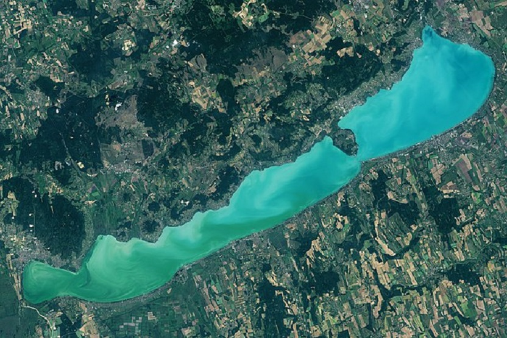
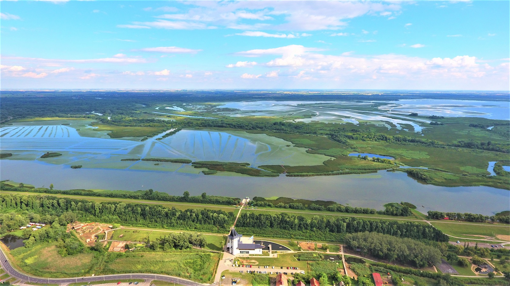
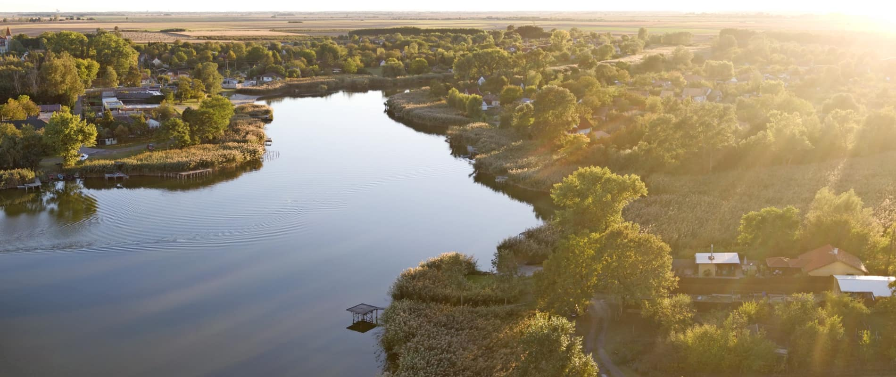

Balaton
A Balaton Közép-Európa legnagyobb tava, Magyarország egyik legnépszerűbb üdülőhelye. A tó partján számos strand, város és falu található, amelyek minden évben több ezer turistát vonzanak. A Balaton nemcsak nyáron, hanem télen is sok látogatót vonz, különösen a Tihanyi-félsziget és a Badacsony környéke. A tó híres még borairól és gasztronómiai élményeiről is. A Balaton déli partja homokos strandjairól ismert, míg az északi part sziklás és természeti szépségeiről híres. A tó környékén számos kulturális és történelmi látnivaló is található, például a Tihanyi Apátság és a Festetics-kastély. A Balaton vízi sportokra is kiváló lehetőségeket kínál, például vitorlázás, szörfözés és kajakozás. A tó környékén számos borászat és borospincét is megtalálhatunk, ahol kiváló borokat kóstolhatunk meg. A Balaton télen is sok látogatót vonz, különösen a téli sportok és a gyógyfürdők miatt. A tó környékén számos kerékpárút és gyalogos túraútvonal található, amelyek kiválóak a természetjárás szerelmeseinek. A Balaton híres még a helyi gasztronómiájáról is, például a balatoni fogas és a halászlé. A tó partján számos fesztivál és rendezvény zajlik nyáron, amelyek még színesebbé teszik a helyi életet. A Balaton környéke ideális családok számára is, mivel számos családbarát program és szórakozási lehetőség található. A tó vizét gyakran nevezik "magyar tengernek", mivel a sekély víz és a homokos partok kiválóak a gyerekek számára. A Balaton környéke gazdag történelmi és kulturális örökségben, amelyet érdemes felfedezni. A tó partján számos kemping és apartmanház található, amelyek ideálisak a hosszabb pihenésre. A Balaton télen is sok látogatót vonz, különösen a téli sportok és a gyógyfürdők miatt.
Látnivalók
- Tihanyi Apátság
- Badacsony borvidék
- Keszthelyi Festetics-kastély
- Balatonfüredi Tagore sétány
Tevékenységek
- Vitorlázás
- Kerékpártúrák
- Horgászat
- Gyógyfürdők
Ételek és italok
A Balaton környéke híres a halászléjéről, a borairól és a helyi specialitásokról, mint például a balatoni fogas.
Tisza-tó
A Tisza-tó Magyarország második legnagyobb tava, amely a Tisza folyó szabályozása során jött létre. A tó környéke természeti szépségeiről és a vízi sportok lehetőségeiről híres. A Tisza-tó és környéke kiváló helyszín a horgászásra, túrázásra és a természet szerelmeseinek. A tó partján számos kemping és apartmanház található, amelyek ideálisak a családok számára. A Tisza-tó híres még madárvilágáról is, amely számos védett madárfajnak ad otthont. A tó környékén számos kerékpárút és gyalogos túraútvonal található, amelyek kiválóak a természetjárás szerelmeseinek. A Tisza-tó vízi sportokra is kiváló lehetőségeket kínál, például kajakozás, kenuzás és vitorlázás. A tó környékén számos étterem és kávézó található, ahol kiváló helyi specialitásokat kóstolhatunk meg. A Tisza-tó télen is sok látogatót vonz, különösen a téli sportok és a gyógyfürdők miatt. A tó környéke gazdag természeti látnivalókkal, például a Tisza-tavi madárrezervátummal. A Tisza-tó híres még a horgászati lehetőségeiről, amelyek minden évben sok horgászt vonzanak. A tó partján számos fesztivál és rendezvény zajlik nyáron, amelyek még színesebbé teszik a helyi életet. A Tisza-tó környéke ideális családok számára is, mivel számos családbarát program és szórakozási lehetőség található. A tó vizét gyakran nevezik "keleti tengernek", mivel a sekély víz és a természeti szépségek kiválóak a pihenésre. A Tisza-tó környéke gazdag történelmi és kulturális örökségben, amelyet érdemes felfedezni. A tó partján számos kemping és apartmanház található, amelyek ideálisak a hosszabb pihenésre. A Tisza-tó télen is sok látogatót vonz, különösen a téli sportok és a gyógyfürdők miatt.
Látnivalók
- Tisza-tavi madárrezervátum
- Poroszlói Ökocentrum
- Abádszalóki strand
Tevékenységek
- Kajakozás
- Horgászat
- Túrázás
Ételek és italok
A Tisza-tó környéke híres a friss halakról és a helyi borokról.
Szelidi-tó
A Szelidi-tó egy mesterséges tó Dél-Magyarországon, amely kiváló lehetőségeket kínál a horgászásra és a pihenésre. A tó környéke természetvédelmi terület, így a látogatók számos védett növény- és állatfajt fedezhetnek fel. A Szelidi-tó híres még gyógyhatású iszapjáról is, amely számos betegség kezelésében segíthet. A tó partján kempingek és apartmanok találhatók, amelyek kényelmes szállást biztosítanak a látogatók számára. A Szelidi-tó környékén számos kerékpárút és gyalogos túraútvonal található, amelyek kiválóak a természetjárás szerelmeseinek. A tó vízi sportokra is kiváló lehetőségeket kínál, például kajakozás és kenuzás. A Szelidi-tó környékén számos étterem és kávézó található, ahol kiváló helyi specialitásokat kóstolhatunk meg. A tó télen is sok látogatót vonz, különösen a téli sportok és a gyógyfürdők miatt. A Szelidi-tó híres még a horgászati lehetőségeiről, amelyek minden évben sok horgászt vonzanak. A tó partján számos fesztivál és rendezvény zajlik nyáron, amelyek még színesebbé teszik a helyi életet. A Szelidi-tó környéke ideális családok számára is, mivel számos családbarát program és szórakozási lehetőség található. A tó vizét gyakran nevezik "déli gyöngyszemnek", mivel a természeti szépségek kiválóak a pihenésre. A Szelidi-tó környéke gazdag történelmi és kulturális örökségben, amelyet érdemes felfedezni. A tó partján számos kemping és apartmanház található, amelyek ideálisak a hosszabb pihenésre. A Szelidi-tó télen is sok látogatót vonz, különösen a téli sportok és a gyógyfürdők miatt.
Látnivalók
- Szelidi-tavi madárrezervátum
- Gyógyiszap
- Környezeti tanösvények
Tevékenységek
- Horgászat
- Természetjárás
- Kerékpártúrák
Ételek és italok
A Szelidi-tó környéke híres a friss halakról és a helyi specialitásokról.